Last modified: Sun May 05 2019 20:02:09 GMT+0800 (Malay Peninsula Standard Time)
Setup
Assuming that you are starting from a unit that is fresh from the box (default factory configuration), you should perform the steps in the order this guide is written in.
Step 1: Prepare for firmware upgrade
Assuming that your router and satellites are not at the latest firmware version, we would need to perform a firmware upgrade. If you are already at the latest firmware, proceed to Step 2.
To upgrade, download a copy of firmware for your router and satellites. Download the latest Netgear Orbi firmware to your computer by visiting the link below.
Link: https://www.netgear.com/support/download/
Insert RBK50 (1 router with 1 satellite) or RBK53 (1 router with 2 satellites) as the model number. If you have a different model, insert the model that you have. Do note that the differences between RBR and RBS, where R = Router while S = Satellite.
Extract Orbi’s .img file to your desktop. Do not open the .img file.
Step 2: Disconnect Devices
Now, disconnect everything that you have except your ADSL router (RJ11 or telephone cable) or modem gateway (for Fiber user) that connect to copper telephone cable/fibre network. Connect the router/modem to Orbi by using an ethernet cable. The Port 0 of your router/modem should (must) be connected to Port 0 of your Orbi (yellow color port with Internet labelled).
The result of the operations are shown below.
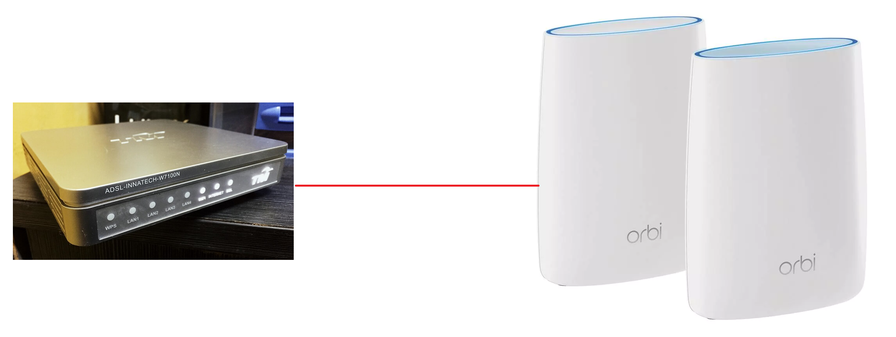
Step 3: Power on the Orbi router and satellite(s)
Connect your router and satellite(s) to your power source and turn them on. If you have turned off your modem/router, turn them on now.
Step 4: Connect to Orbi
There are two ways of connecting your device, laptop or desktop, to Netgear Orbi for initial setup: ethernet cable and wireless network (if supported). Also, DO NOT use Orbi App or Smartphone.
If you choose to use ethernet cable, connect your device to one of the three available ports in Orbi (Port 1, 2, or 3).
If you choose to use wireless network, connect your device to Orbi’s wireless network. Check the stickers under your Orbi router for the wireless username and password.
Step 5: Initial Setup
If you have Orbi that is fresh out of the box, we have to run through the initial setup. The initial setup is very straight forward as we would just want to bypass the screen so that we can access the advanced setup page.
To begin, open a Web Browser and insert the IP address 192.168.1.1 or 10.0.0.1.
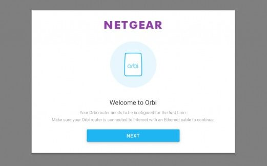
If you are unable to see a page as the figure above, you may have a different IP address. Obtain your gateway IP address from Connect Status Page (Windows OS) or Network (MacOS)
Figure below shows my default Gateway for the wireless network that I connected to in Windows Machine is 192.168.1.2.
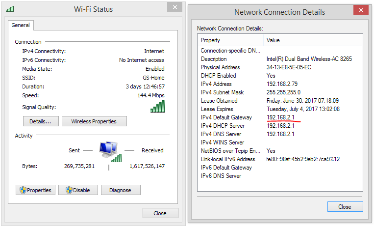
Figure below shows the default Gateway for the Ethernet network connection in a Macintosh Machine is 192.168.1.1.
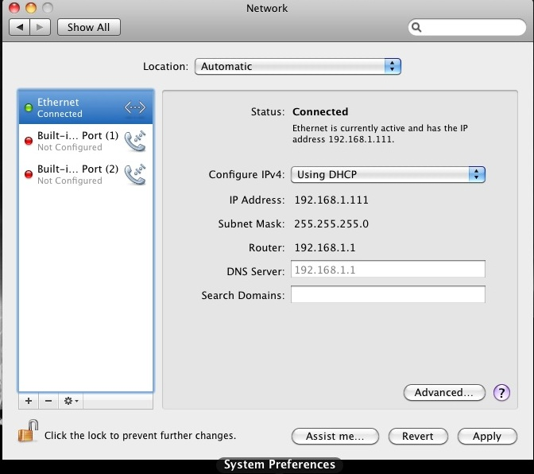
Then, agree the terms and conditions shown on the screen.
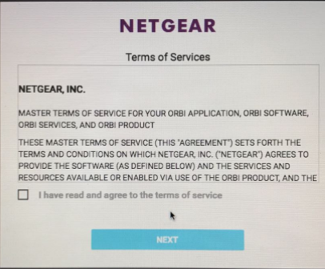
On the next screen, select the second option: “No, manually enter settings”.
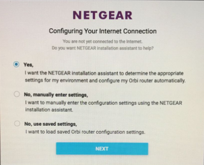
A pop up window will then show a message regarding network experience. Press “OK” to proceed.
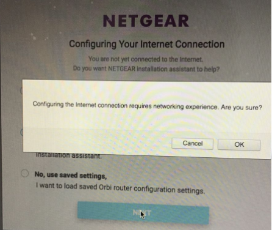
You will then asked if you would like to add your Orbi satellites. To make everything easy, we will just skip this step for now and add it later.
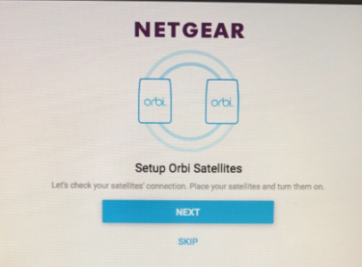
On the next screen, insert all the required information for your Admin account.
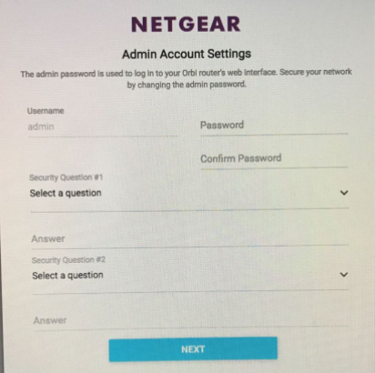
You will then asked to change modify your Wireless Network name and password. Modify it to your personal preferences.
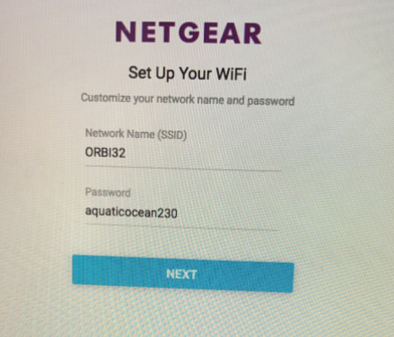
The setup wizard will then attempt to check the internet connection. Since we have not began configuring our network, it will fail.
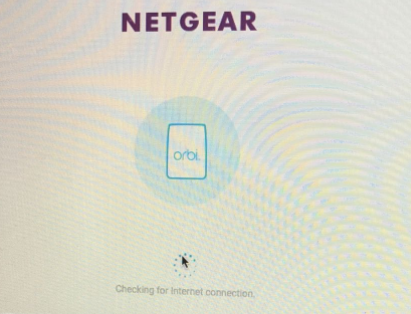
On the next screen, the setup wizard will attempt to perform a firmware upgrade. Since there is no active internet connection, it will not be able to perform the upgrade.
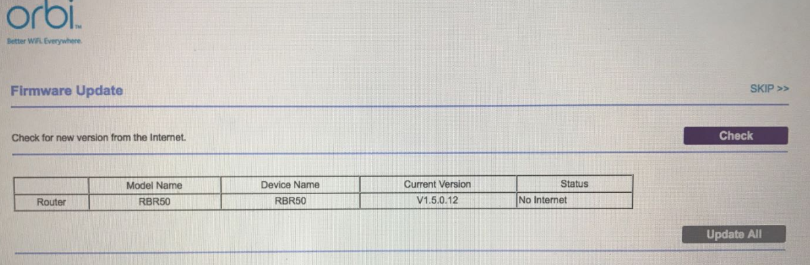
You will then be redirected to Netgear Website. Since there is no active internet connection, it would fail as well.
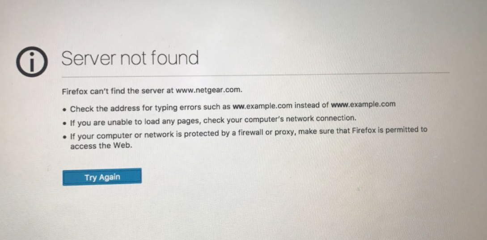
Now, go back to the Netgear Web Interface for your Orbi router by visiting the IP address that you put in earlier (192.168.1.1, 10.0.0.1, or any other IP address that you used). You will see a list of tabs and information of your router.
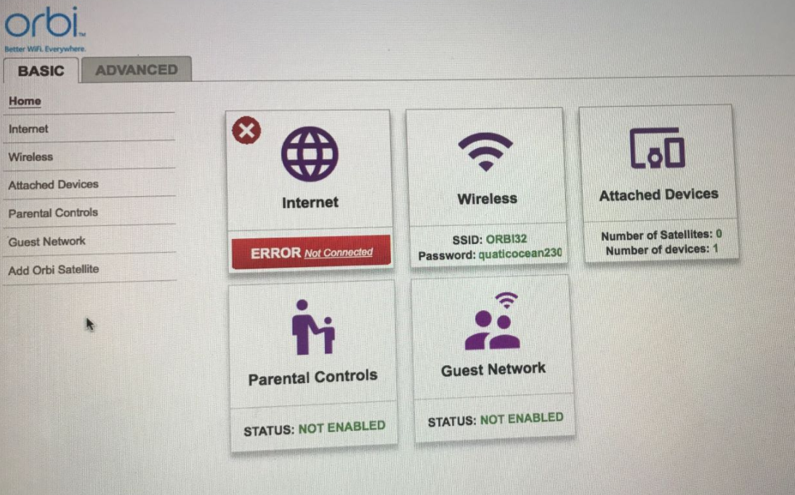
Step 6: Perform Firmware Upgrade
To perform firmware upgrade, visit the Netgear Web Interface for your Orbi router by visiting the IP address that you put in earlier (192.168.1.1, 10.0.0.1, or any other IP address that you used).
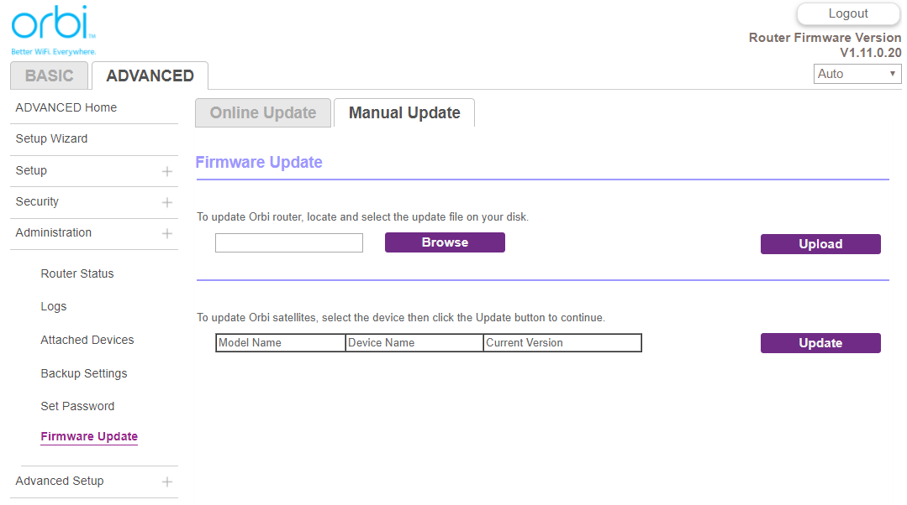
Go to Advance > Firmware Upgrade > Manual Update.
Select “Browse” and go to the directory where you have your Orbi router’s firmware you placed (refer to Step 1). Select the firmware that ends with RBR. Then, select “Upload” to upload the firmware.
Your router will then be upgraded and rebooted. It may take a few minutes.
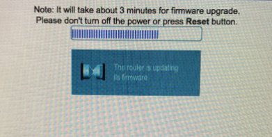
Step 7: Setup PPPoE
After the firmware upgrade, if you are using a wireless connection to access the Web Interface, make sure that you are still at the same Orbi wireless network that you were in earlier.
Visit the Netgear Web Interface for your Orbi router by visiting the IP address that you put in earlier (192.168.1.1, 10.0.0.1, or any other IP address that you used).
Go to Basic > Internet.
Under the Internet Setup section, select “Yes” for the option where it ask whether your Internet connection require a login.
Then, select “PPPoE” for Internet Service Provider.
Enter your UniFi or Streamyx Login ID and Password in the Login and Password field.
Select Always On for Connection Mode.
Leave the rest of the setting default. Figure below shows the result of the operation above. If you are using UniFi, your Login information will contain @unifi instead of @streamyx.
Choose “Apply” to save the configurations.
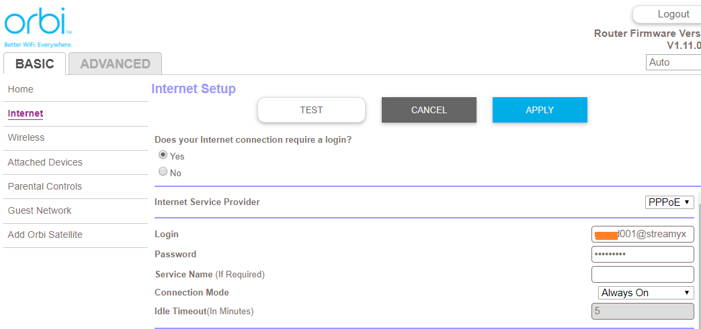
Step 8A: Setup VLAN ID (UniFi User)
If you are streamyx user, please skip this step.
Go to Advanced > Advanced Setup > VLAN/Bridge Setting.
Enable VLAN by selecting the checkbox that says “Enable VLAN/Bridge Group”. Then select the radio button that says “By VLAN tag group”
Select the first Radio Button in the table and press “edit”. Enter the value 500 for VLAN ID and 1 for Priority field.
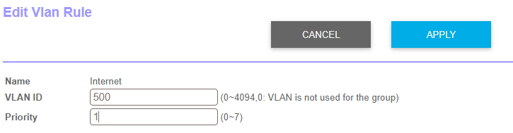
Press Apply to Save the setting. At this point, you should have a working Internet connection. If you are unable to access Internet after a few minutes, check your UniFi username and password to make sure that they are correct.
If you do not have IPTV that come with UniFi, please skip this step.
In the same page, add more VLAN rules.
Enter the value 600 for VLAN ID and 5 for Priority field for your UniFi IPTV. If you have your IPTV plugged in at Port 3, check the Port 3 box. The box that is checked should match the port that you have your IPTV ethernet plugged in.
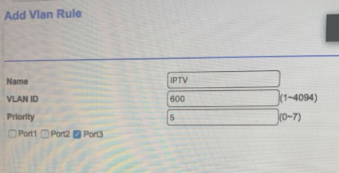
Press Apply to Save the setting.
At this point, you should have a working IPTV.
Step 8B: Bridge Mode (Streamyx User)
If you are UniFi user, please skip this step.
In order to have Orbi to work with your ADSL (telephone cable) modem/router, you have to set your ADSL modem setting to Bridge Mode. Most of the modern ADSL modem routers should have bridge mode.
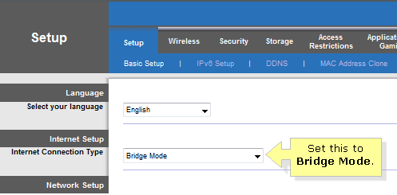
After you have set it to Bridge Mode, your Internet connection should work within a few minutes. If you are unable to access Internet after a few minutes, check your UniFi username and password to make sure that it is correct.
Step 9: Not Working? Read Here
If you are still unable to connect to the Internet, you may want to go to advance setting and change the DNS to Google DNS or OpenDNS. Screenshot below shows the DNS has been changed to Google DNS 8.8.8.8 and 8.8.4.4.
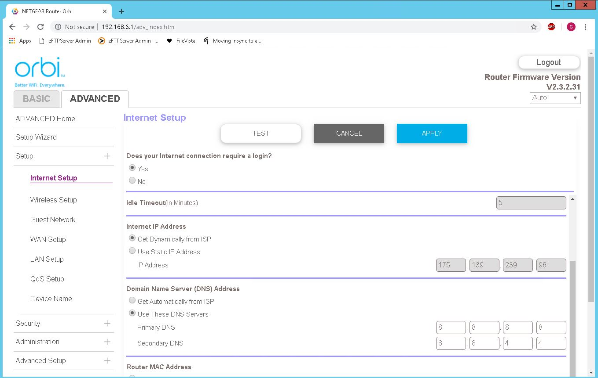
Step 10: The End
Thank you for reading and enjoy your Orbi!